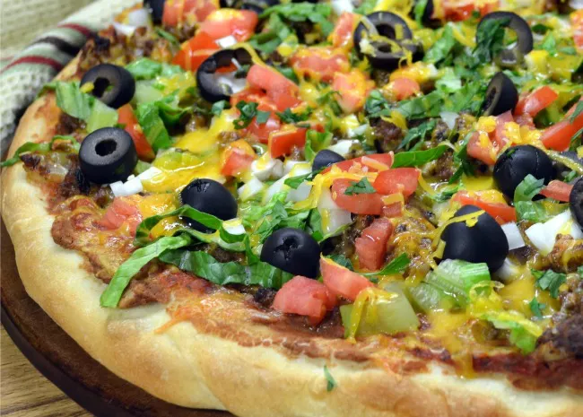

Pizza Recipe

How to Make Pizza at Home That's Better Than Takeout
Pizza is a crowd-pleasing choice for busy weeknights and fun weekend dinners alike. But you don't have to rely on restaurants or takeout for top-notch pizza. Read on for tips on how to make your own pizza at home. We'll walk you through how to make pizza crust, how to top a pizza, pizza baking temperature, and how long to bake pizza. Plus, we'll share some of our favorite homemade pizza recipes to try.
Ingredients
For the pizza dough
- 1 1/2 cups (355 ml) warm water (105°F-115°F)
- 1 package (2 1/4 teaspoons) active dry yeast
- 3 3/4 cups (490g) bread flour
- 2 tablespoons extra virgin olive oil (omit if cooking pizza in a wood-fired pizza oven)
- 2 teaspoons kosher salt
- 1 teaspoon sugar
For making the pizza and toppings
- Extra virgin olive oil
- Cornmeal (to help slide the pizza onto the pizza stone)
- Tomato sauce (smooth or pureed)
- Firm mozzarella cheese,grated
- Fresh soft mozzarella cheese, separated into small clumps
- Fontina cheese, grated
- Parmesan cheese,grated
- Feta cheese, crumbled
- Mushrooms, very thinly sliced if raw, otherwise first sautéed
- Bell peppers, stems and seeds removed, very thinly sliced
- Italian pepperoni, thinly sliced
- Italian sausage, cooked ahead and crumbled
How to Cook Pizza on a Stone
- Heat the oven.
- Form the pizza dough and place it on a peel dusted with a little flour or cornmeal.
- Slip the pizza onto the hot pizza stone.
- After 5 minutes of baking, check the pizza.
- The pizza is done when the cheese is melted to a medium-to-dark brown.
Return to main page